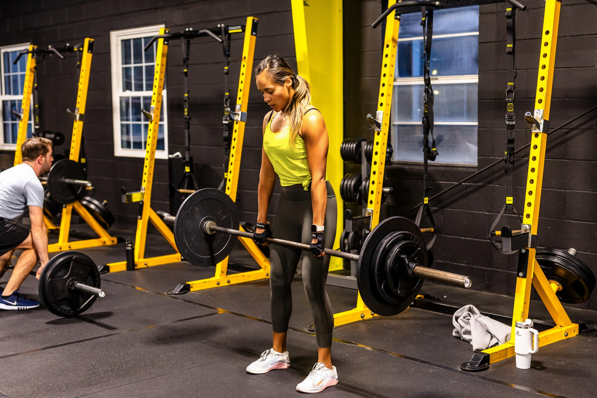
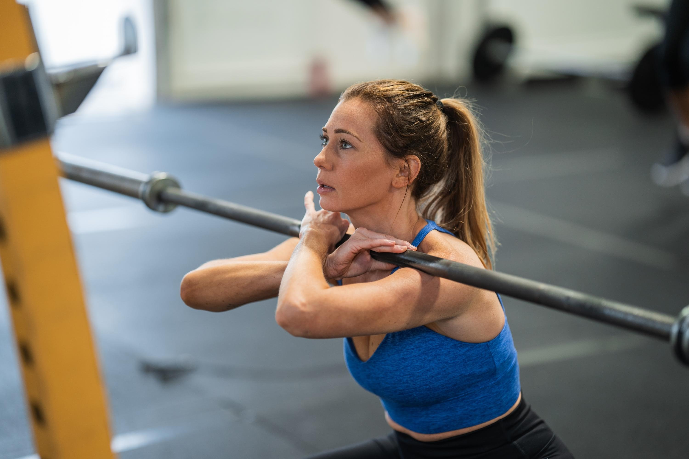
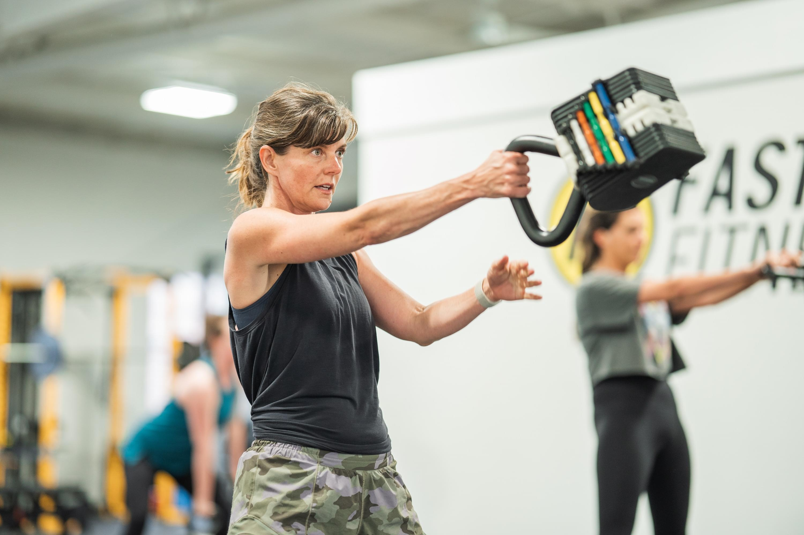
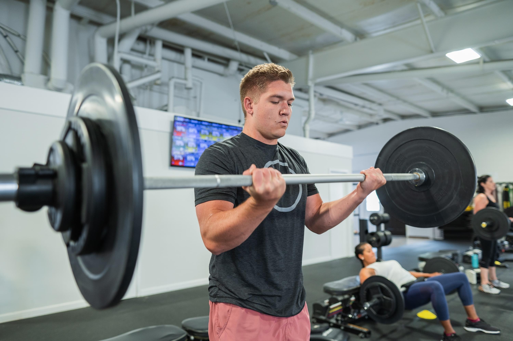
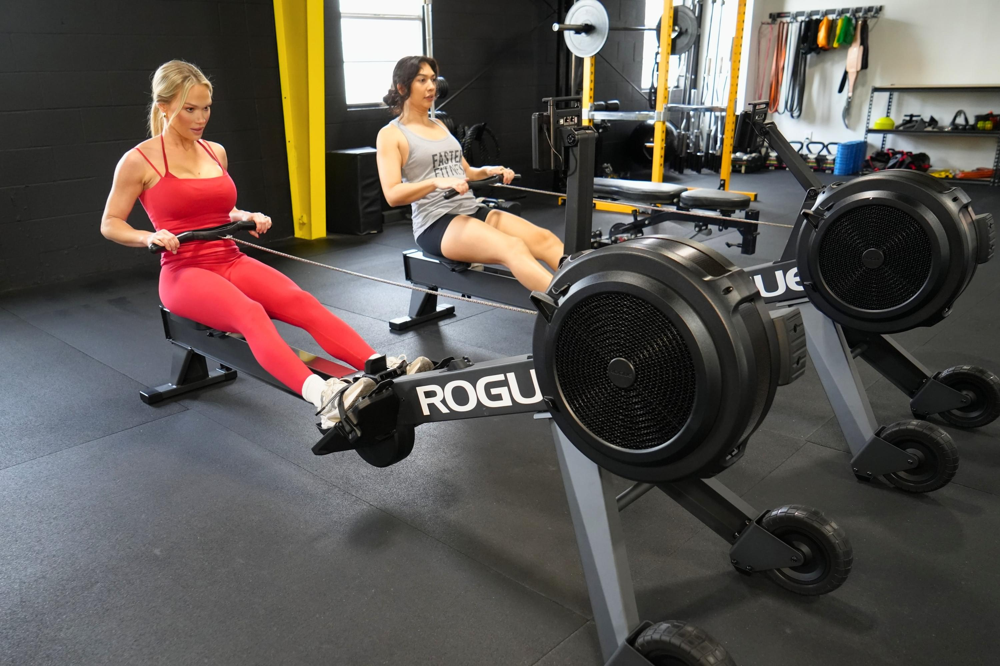
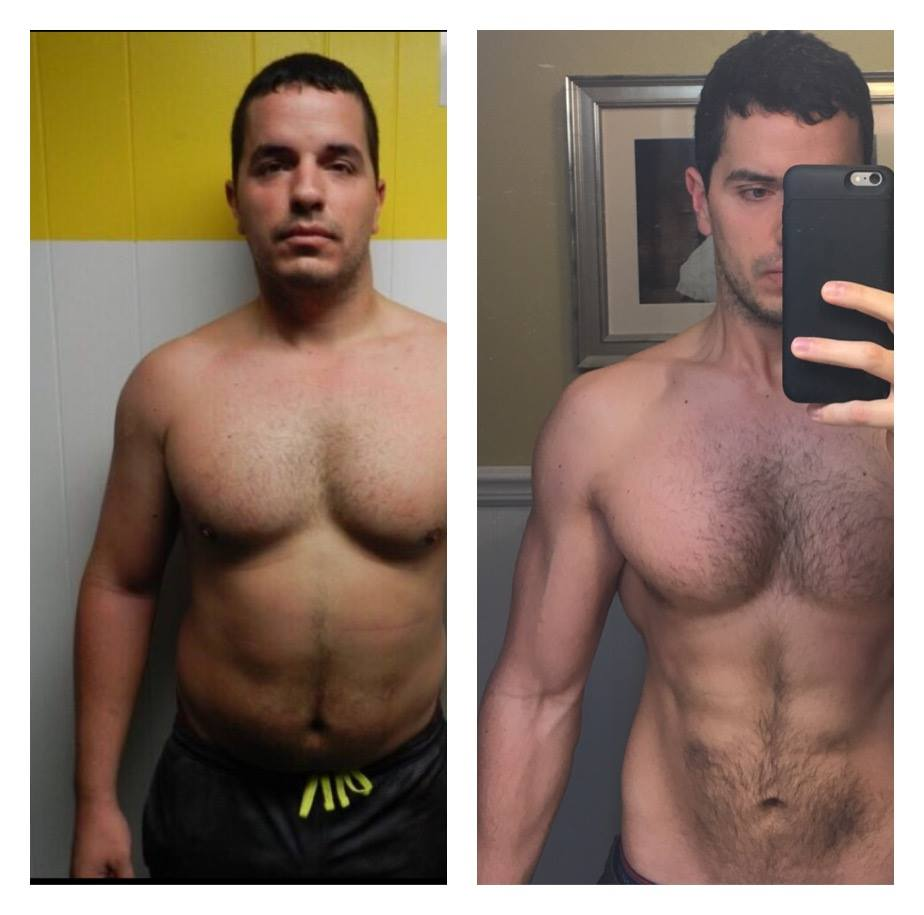
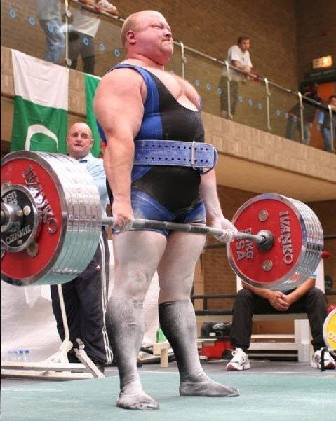
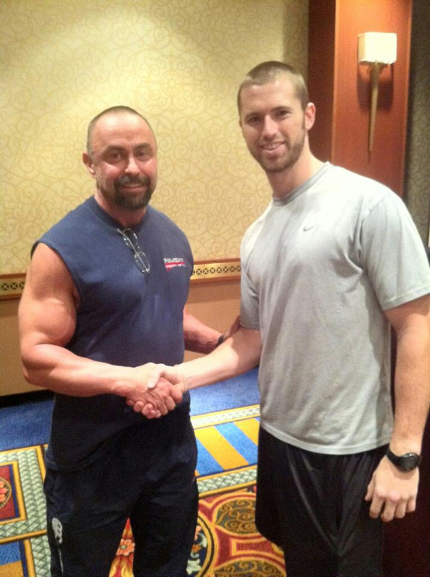
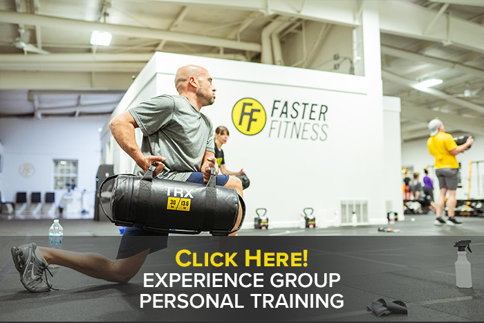

View this Faster Fitness post on Instagram
Faster Fitness Blog
Coaching Notes
For Real Life.
Local guides from the Brentwood coaching team on personal training, strength, nutrition, fat loss, and building consistency when life is busy.
Brentwood, MO
Personal Training
Strength
Nutrition
Injury-Aware Modifications
Original Faster Fitness Media
Real Videos.
Real Gym Moments.
The original blog is not just written advice. It includes real coaching reels, real members, real exercise demos, and real posts from the Faster Fitness team.
View this Faster Fitness post on Instagram
View this Faster Fitness post on Instagram
Latest Original Posts
View Full Archive
Results
Want Results Before Summer? Focus on These 4 Things
Real video · 2026-05-07

Nutrition
5 Smart Ways to Use MyFitnessPal (Without Losing Your Mind)
Real video · 2026-04-03

Training
12 Movements We Use to Build Real-World Strength
Real video · 2026-03-05

Training
How To Row The Right Way
Real video · 2026-02-05

Coaching
What It’s Like To Be A Part Of The Faster Fam
Real video · 2025-11-14

Coaching
New Coach Alert! Meet Coach Kam
Real video · 2025-10-29

Results
The Two Roads to Lasting Fitness Success
Real video · 2025-10-18
Coaching
Behind The Scenes Of Our Program
Real video · 2025-08-21
Nutrition
Our Best Tips To Help Your Abs Look Great This Summer
Real video · 2025-07-24
Coaching
How Hilda Found Her Ideal Fitness Routine
Real video · 2025-07-10
Coaching
The 4 Most Important Habits To be Fit and Healthy
Real video · 2025-06-26
Nutrition
Zone 2 vs HIIT For Fat Burning – Find Out Which is Better!
Real video · 2025-05-29
Start Here
Most Useful
Guides.
These are the first articles we brought forward because they support local search intent and answer the questions people ask before they trust a gym.

Local Fitness
5 Questions To Ask Before Choosing Personal Training In St. Louis
Use these five questions to choose personal training in St. Louis that gives you coaching, accountability, nutrition support, and workouts adjusted for your body.
5 min read · Updated 2026-05-31
Training
The 5 Types Of Weight Training
A clear guide to the five main types of weight training and how Faster Fitness blends strength, performance, conditioning, and general fitness for real people.
6 min read · Updated 2026-05-31
Training
Strength Training For Function Vs. Aesthetics
You do not have to choose between moving well and looking stronger. Functional strength training can support both when it is programmed correctly.
6 min read · Updated 2026-05-31Article Library
Training, Nutrition
And Local Fitness.

Local Fitness
How To Find The Right Personal Trainer In St. Louis
A practical local guide to choosing a personal trainer in St. Louis, from qualifications and programming to fit, accountability, and injury-aware coaching.
6 min read · Updated 2026-05-31
Local Fitness
Workout Classes In St. Louis: What To Look For
Not all workout classes in St. Louis are built the same. Learn what makes a coached small-group session more personal, safer, and easier to stick with.
4 min read · Updated 2026-05-31
Training
Not All Group Training Is The Same
Group training can feel personal when the room is coached correctly. Here is how to tell the difference between a class and true small-group personal training.
5 min read · Updated 2026-05-31
Training
Why Group Personal Training Is More Than A Fad
Group personal training keeps growing because it solves a real problem: people need coaching, accountability, and community without the cost of private training every day.
5 min read · Updated 2026-05-31
Training
Strength Training For Women: Build A Strong Athletic Body
Strength training for women in St. Louis and Brentwood. Build strength, confidence, conditioning, and body composition with coached support.
5 min read · Updated 2026-05-31
Training
Exercise Guide: Plate Halos
Plate halos are a simple core and shoulder control exercise. Learn why they work and how to use them safely in a training program.
3 min read · Updated 2026-05-31
Local Fitness
Alternatives To A Big-Box Gym In St. Louis
A big-box gym can work for self-starters, but many people need coaching, structure, and accountability. Here is when a small-group training studio makes more sense.
5 min read · Updated 2026-05-31
Nutrition
Cut Meal Prep Time In Half With These Hacks
Meal prep does not need to take your whole Sunday. Use these simple habits to make healthy eating faster, repeatable, and easier to stick with.
6 min read · Updated 2026-05-31
Nutrition
Spot Reduction: Is Targeted Fat Loss Possible?
You cannot choose exactly where fat comes off first, but you can build a plan that improves body composition with strength training, nutrition, conditioning, and recovery.
6 min read · Updated 2026-05-31
Faster Fitness
Why I Started Faster Fitness
The story behind Faster Fitness: a Brentwood training studio built to make expert coaching, accountability, and real-life consistency easier to access.
3 min read · Updated 2026-05-31
Training
Save Time And Get Faster Results From Optimized Training
A smarter workout does not need to take 90 minutes. Learn how strength, conditioning, and coaching can fit into a focused 45-minute session.
6 min read · Updated 2026-05-31
Nutrition
What Are The Best Meal Replacements?
Meal replacements can help when life is busy, but they work best as a backup plan, not the foundation. Here is how to choose smarter options.
5 min read · Updated 2026-05-31Blog FAQs
Use The
Guides.
How to use the Faster Fitness blog when you are looking for training, nutrition, fat loss, and real-life consistency advice.
What does the Faster Fitness blog cover?
The blog covers strength training, fat loss, nutrition, meal prep, recovery, mobility, consistency, and real-life fitness advice from the Faster Fitness coaching perspective.
Are the blog tips for beginners?
Yes. Many posts are written to help beginners understand what matters, what to avoid, and how to build habits without getting overwhelmed.
How should I use the blog if I want results?
Start with articles on training consistency, nutrition habits, and strength basics, then connect those ideas to a coached plan inside the Brentwood studio.
Does the blog replace coaching?
No. The blog is education. Coaching adds the personalization, accountability, modifications, and feedback that most people need to stay consistent.
Ready To Train?
Get Coached In Brentwood.
45-minute group personal training. Coached, modified for your level, and built for real life.